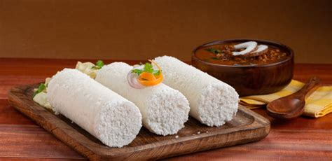
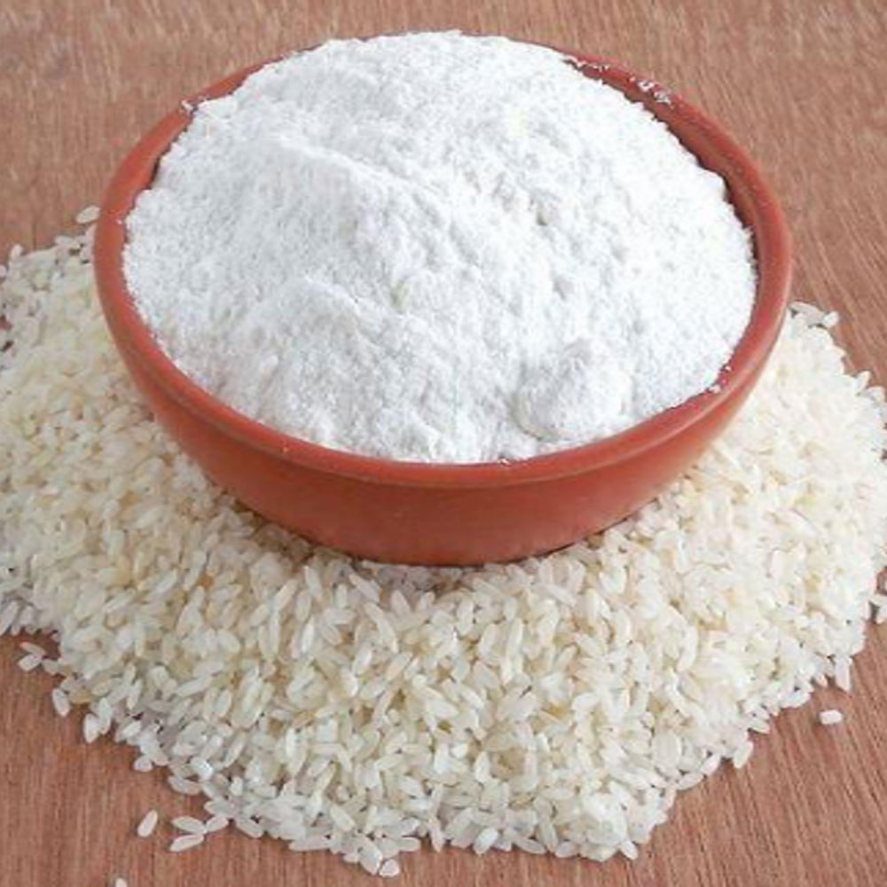

Puttu

Ingredients
- 2 cup puttu flour

- ¾-1 cup water
- 1 cup coconut
Puttu is a dish served as a breakfast in Kerala.
It is paired with chick pea curry, papadam or banana for increasing taste.
Puttu is made in a special shaped utencil which is used to steam the mixture
Home
Instructions
- Firstly in a large bowl take 2 cup puttu flour and ¼ tsp salt. mix well.
- Now add ¼ cup water and crumble the flour.
- Add water in batches and mix well with your fingertips.
- The flour need to hold shape when pressed between the fist, and need to break on further pressing.
- Make a moist flour with crumbly texture.
- Break all the lumps with your finger. alternatively, blend it in a mixer for 2 pulses.
- Now take a puttu steamer and layer with 2 tbsp of fresh grated coconut.
- Followed by 3 tbsp of puttu flour. again layer with 2 tbsp of coconut, 3 tbsp of 3 tbsp of puttu flour.
- Lastly add 2 tbsp coconut and level it up.
- Close the puttu kutty (cylindrical tube) and steam for 5 minutes or till the steam escapes from top holes of puttu kutty (cylindrical tube).
- Carefully open it and push the puttu using a wooden ladle from the back.
- Finally, serve kerala puttu hot along with kadala curry.